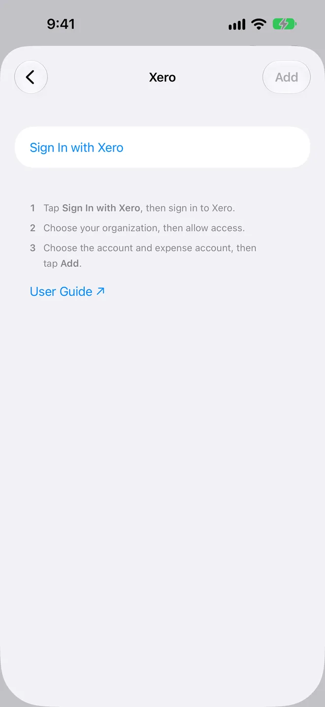

Send Apple Card transactions to Xero
WalletFeed sends your posted Apple Card, Apple Cash and Savings transactions from your iPhone to a bank account in Xero. You connect WalletFeed to your Xero organization, then WalletFeed adds each transaction as spend money or receive money.
Before you start
You must have these items:
- An iPhone with iOS 26 or a newer version. WalletFeed is available only in the US.
- WalletFeed on your iPhone, with access to your Apple Card, Apple Cash or Savings account.
- WalletFeed Pro (a subscription with a 1-week free trial, or a one-time Lifetime purchase). You must have WalletFeed Pro to send transactions to Xero.
- A Xero organization, on a trial or a paid plan. Your Xero user must have permission to connect apps to the organization.
Your sign-in stays on your iPhone
- WalletFeed keeps your Xero sign-in in the Keychain on your iPhone. iOS encrypts the Keychain.
- Your Xero sign-in does not go to iCloud Keychain or to your other devices.
- WalletFeed has no account, and no WalletFeed server keeps your Xero sign-in. No person at WalletFeed can see or get your Xero sign-in.
- Your iPhone sends your Xero sign-in only to Xero, in each request to Xero.
- When you delete the destination, WalletFeed deletes your Xero sign-in from your iPhone. You can also remove WalletFeed from your Xero organization.
Step 1: Open the Xero form in WalletFeed
-
On your iPhone, open WalletFeed.
-
Tap Destinations.
-
Tap + at the top of the screen.

-
In the search field, type
Xero. -
Tap Xero.
-
If WalletFeed shows WalletFeed Pro, get WalletFeed Pro.
Result: After you get WalletFeed Pro, WalletFeed shows the Xero form.

Step 2: Connect WalletFeed to Xero
-
Tap Sign In with Xero.
Result: WalletFeed opens the Xero page.
-
On the Xero page, get access to your Xero account with your e-mail address and your password.
-
Select the organization that receives your transactions.
-
Give WalletFeed access to the organization.
Result: WalletFeed shows Signed In and Organization.
With this sign-in, WalletFeed can manage bank transactions, contacts and settings in the organization. WalletFeed uses this access to get the list of your accounts, make an Apple Card account, and add, change and delete the transactions that it sends.
Step 3: Select the accounts in WalletFeed
-
In Organization, make sure that WalletFeed shows the organization that you selected in Xero.
-
In Account, select the bank account that receives your transactions.
If Xero has an account with the name Apple Card, WalletFeed selects that account. If Xero has no account with that name, WalletFeed selects New Apple Card Account. With New Apple Card Account, WalletFeed makes a credit card account with the name Apple Card in Xero.
-
In Expense Account, select the account for your transactions, for example 6240 · Miscellaneous Expense.
If Xero has an expense account with the name Miscellaneous Expense, WalletFeed selects that account. After WalletFeed adds a transaction to this account, you can change its account in Xero.
-
Tap Add.
Result: WalletFeed shows Send Transactions to Xero? The message tells you the data that Xero receives, the Wallet accounts and the start date.
-
Tap Send.
Result: WalletFeed starts to send your transactions to Xero. In Destinations, the name of the new destination starts with "Xero ·", for example "Xero · Apple Card".
If you tap Cancel in the message, WalletFeed sends no transactions and removes the destination. If WalletFeed made the Apple Card account, the account stays in Xero. If you tap Add again, WalletFeed uses that account.
Step 4: Find the transactions in Xero
-
On a computer, open Xero in a web browser.
-
Open the organization that you selected in WalletFeed.
-
Open the bank account that you selected in WalletFeed, for example Apple Card.
-
Open the list of transactions in the account.
Result: Xero shows spend money and receive money transactions from WalletFeed. The reference of each transaction starts with
wf:.
Data that Xero receives
WalletFeed adds each posted transaction to the bank account that you selected. A purchase is spend money. A refund or a payment to your card is receive money.
| From Wallet | In Xero |
|---|---|
| The merchant name, or the description if there is no merchant name | The contact |
| The date of the transaction, in the time zone of your iPhone | The date |
| The amount of the transaction | The amount of the one line of the transaction |
| The description, the card statement text and the amount in a different currency, if they are different from the merchant name | The description of the line |
| The expense account that you selected in WalletFeed | The account of the line |
wf: and the ID of the transaction in Wallet |
The reference |
If Xero has a contact with the same name, Xero uses that contact. If not, Xero adds a contact.
The amount includes the tax. Xero calculates the tax from the tax rate of the account. You can change the account, the tax rate and the contact of each transaction in Xero.
WalletFeed sends the amount in the currency of the bank account. WalletFeed sends no category and no balance. WalletFeed does not reconcile the transactions. After WalletFeed sends a transaction, WalletFeed changes only its date and its amount. WalletFeed does not change a reconciled transaction.
The bank account also receives the transactions from your other Wallet accounts, for example Apple Cash. To send each Wallet account to a different bank account in Xero, add one Xero destination for each Wallet account. Then set Filter in each destination (refer to Send only some transactions).
New and changed transactions
While WalletFeed is open, Xero receives changes in seconds. When WalletFeed is not open, iOS starts WalletFeed approximately 1 hour or less after a change in Wallet. If Background Sync is on in Settings › Sync, WalletFeed then sends the change.
Xero receives a charge only after it posts. A pending charge does not go to Xero. When the charge posts, WalletFeed adds it to Xero. A declined charge does not post, thus Xero does not receive it.
If Wallet removes a posted transaction, WalletFeed deletes it in Xero. If you reconciled the transaction in Xero, WalletFeed does not delete it. A refund is a different transaction, as receive money.
A payment to your Apple Card from a bank account is receive money in the Apple Card account. If your bank account in Xero also has the payment, you can record the payment as a transfer in Xero. Then delete the receive money transaction from WalletFeed in Xero.
Send previous transactions
A new destination also receives previous transactions from the start date in Settings › Sync › Initial History. Initial History is All until you change it. If you change Initial History before you add Xero, the new destination receives transactions from the new start date.
To send previous transactions after you add Xero, do these steps:
-
In Destinations, tap the Xero destination.
-
Tap Send History.
-
Tap 30 Days, 90 Days, 1 Year or All.
Result: WalletFeed shows Sending History and the number of transactions that it sent.
-
To stop WalletFeed before it sends all of the transactions, tap Send History › Stop Sending.
WalletFeed sends 200 previous transactions to Xero, waits 30 seconds, and then sends more transactions. Xero lets WalletFeed send a maximum of 60 requests each minute to an organization.
Send History does not add a transaction two times. WalletFeed finds each transaction by its wf: reference. If the amount or the date is different, WalletFeed changes the transaction that it finds. If you deleted a transaction in Xero, Send History does not add the transaction again.
For more information, refer to Send previous transactions.
Change or remove the destination
You change the Xero destination on its screen in Destinations. For more information about this screen, refer to Destinations.
Send only some transactions
-
In Destinations, tap the Xero destination.
-
Set Filter to on.
-
Change Include, Minimum, Accounts, Categories or Exclude.
In Accounts, you select the Wallet accounts for Xero. With Apple Intelligence, you can also type a rule in words, for example "Travel over $50, not Uber", and tap the Apple Intelligence icon.
For more information, refer to Filter the transactions for a destination.
Stop the destination for a time
-
In Destinations, tap the Xero destination.
-
Set Enabled to off.
Until you set Enabled to on again, WalletFeed does not send transactions to Xero.
Replace the sign-in
If Xero does not accept your sign-in, do these steps:
-
In Destinations, tap the Xero destination.
-
Tap Sign In Again.
-
On the Xero page, get access to your Xero account.
-
Select the organization of the destination.
-
Give WalletFeed access to the organization.
Result: WalletFeed makes sure that the new sign-in can open the organization and the account. Then WalletFeed shows Signed In with a green checkmark.
Remove Xero from WalletFeed
-
In Destinations, tap the Xero destination.
-
Tap Delete.
-
Tap Delete again.
Result: WalletFeed removes the destination and deletes your Xero sign-in from your iPhone. WalletFeed also removes its connection to the organization, if no other Xero destination on your iPhone uses that organization.
The transactions that WalletFeed sent stay in Xero.
Remove WalletFeed from your Xero organization
- On a computer, open Xero.
- Click the name of your organization.
- Click Settings.
- Click Connected apps.
- Find WalletFeed in the list, then disconnect it.
After you remove WalletFeed in Xero, the Xero destination in WalletFeed shows "Xero can't open" and the name of the organization, or "Signed out". To send transactions again, replace the sign-in.
If there is a problem
To make sure that WalletFeed can send transactions to Xero, do these steps:
-
In Destinations, tap the Xero destination.
-
Tap Send Test.
Result: If Xero receives the test transaction, WalletFeed shows a green checkmark.
If WalletFeed shows "Xero didn't connect an organization"
Xero did not give WalletFeed access to an organization. WalletFeed then shows "Xero didn't connect an organization. Sign in again and choose one." This occurs if you did not select an organization on the Xero page. It also occurs if Xero shows a limit of connections. For example, an organization can connect a maximum of five apps that Xero did not certify.
- On the Xero form, tap Use Another Account.
- On the Xero page, select the organization.
- Give WalletFeed access to the organization.
- If Xero shows a limit of connections, remove an app that you do not use from the organization in Xero. Then do step 1 again.
If WalletFeed shows "Xero can't open" and the name of the organization
Xero does not let WalletFeed open the organization. WalletFeed then shows, for example, "Xero can't open Demo Company (US). Sign in again, or check its Xero plan." This occurs if a person removed WalletFeed in Xero, or if your Xero user lost permission. It also occurs if the trial or the plan of the organization ended.
- In Xero, make sure that the organization has a trial or a paid plan.
- In WalletFeed, replace the sign-in.
If the destination shows "Authentication failed" or "Signed out"
Xero does not accept the sign-in of the destination. This occurs if WalletFeed did not connect to Xero for 60 days. The destination then shows "Signed out. Open the destination and tap Sign In Again." or "Authentication failed. Sign in again."
- Do the steps in Replace the sign-in.
If WalletFeed shows "This sign-in can't open"
You selected a different organization or a different Xero account on the Xero page.
- Tap Sign In Again again.
- On the Xero page, get access to the Xero account that has the organization of the destination.
- Select the organization of the destination.
If the destination shows "Xero's daily limit for this organization is used"
Xero lets WalletFeed send a maximum number of requests each day to an organization. When WalletFeed sends many previous transactions, it can get to this limit. WalletFeed then shows "Xero's daily limit for this organization is used. Sending resumes tomorrow."
-
Wait.
Result: When Xero lets WalletFeed send requests again, WalletFeed sends the transactions that it did not send.
If the destination shows "Xero is limiting requests"
WalletFeed sent the maximum of 60 requests in one minute to the organization. This can occur if two Xero destinations, or two iPhones, send to the same organization. WalletFeed then shows "Xero is limiting requests. Sending resumes in a minute."
-
Wait 1 minute.
Result: WalletFeed can send the transactions again.
If the destination shows "Xero's lock date refuses these transactions"
The organization has a lock date in Xero, and the transactions are before that date. Xero does not let apps add transactions before the lock date. WalletFeed then shows "Xero's lock date refuses these transactions. Change it in Xero, or stop Send History."
- If you send previous transactions, tap Send History › Stop Sending.
- To add the transactions to Xero, change the lock date in Xero.
If the destination shows "Xero refused" and a number of transactions
Xero did not accept some transactions, for example because a person archived the expense account. Xero added the other transactions. WalletFeed then shows, for example, "Xero refused 2 transactions. Check the destination's accounts in Xero."
- In Xero, make sure that the bank account and the expense account of the destination are active.
- If a person archived the expense account, remove the Xero destination in WalletFeed.
- Add Xero again in WalletFeed, and select an active expense account.
If the destination shows "Your Xero plan's limit is reached"
Xero refused the transactions because the organization is at a limit of its plan. WalletFeed then shows "Your Xero plan's limit is reached. Check the plan in Xero."
- In Xero, look at the plan of the organization.
- Upgrade the plan, or wait until Xero lets the organization add transactions again.
If the destination shows that the account is in a different currency
The bank account in Xero has a different currency than your transactions. Xero records each transaction in the currency of its bank account. WalletFeed then shows, for example, "Apple Card in Xero is in AUD, not USD. Add this destination again with a USD account."
- Remove the Xero destination in WalletFeed.
- Add Xero again, and select a bank account in USD. You can also select New Apple Card Account.
If WalletFeed shows "Xero didn't create the account"
Xero did not make the Apple Card account when you tapped Add. WalletFeed then shows "Xero didn't create the account. Choose an existing account."
- In Account, select a bank account that you have in Xero.
- Tap Add.
If Xero shows a transaction two times
WalletFeed did not find the first transaction, because its reference does not start with the wf: text and the ID.
- In Xero, find the transaction with a reference that does not start with
wf:. - Delete that transaction in Xero.
If Xero receives transactions only while WalletFeed is open
When Background Sync is off, WalletFeed sends transactions only while it is open.
- Tap the gear icon at the top of Destinations.
- In Settings › Sync, set Background Sync to on.
For more information, refer to Background Sync.
If Destinations shows "Sync Requires Pro"
Your WalletFeed Pro subscription stopped. WalletFeed Pro is necessary for all destinations.
-
Tap Upgrade.
Result: WalletFeed shows the WalletFeed Pro screen.
-
If your Apple Account has a WalletFeed Pro purchase, tap Restore Purchases.
-
If your Apple Account has no WalletFeed Pro purchase, select a plan.
-
Complete the purchase.

Related
Updated November 2, 2026